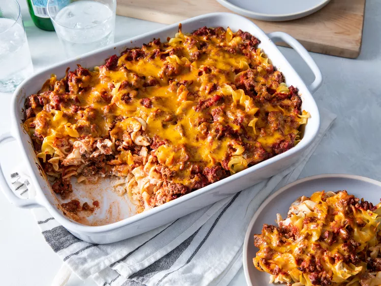

Hamburger Casserole

Description:
My grandmother's hamburger casserole is classic comfort food! Featuring ground beef, noodles, and a creamy cheese sauce, this simple recipe dates back to the 1940's. You can tweak the amount of cheese and sour cream depending on what you've got in the fridge — it'll still turn out great!
Ingredients:
- Ground Beef
- Tomato sauce
- Seasonings
- Pasta
- Sour cream and Cream cheese
- Onion
- Cheddar cheese
Steps:
- Cook and season the ground beef. Drain and discard the grease.
- Mix the sauce, sugar, and seasonings into the ground beef and simmer. Remove from heat
- Strain water from pasta
- Cook and drain the egg noodles.
- Mix the sour cream, cream cheese, and diced onion until well-combined.
- Assemble and bake the casserole.